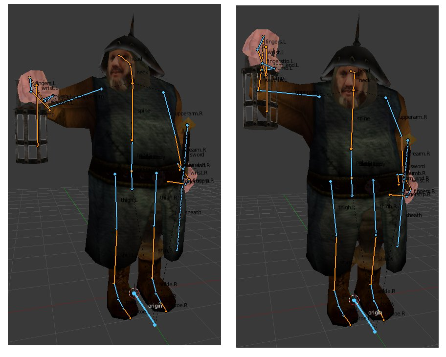
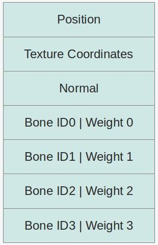
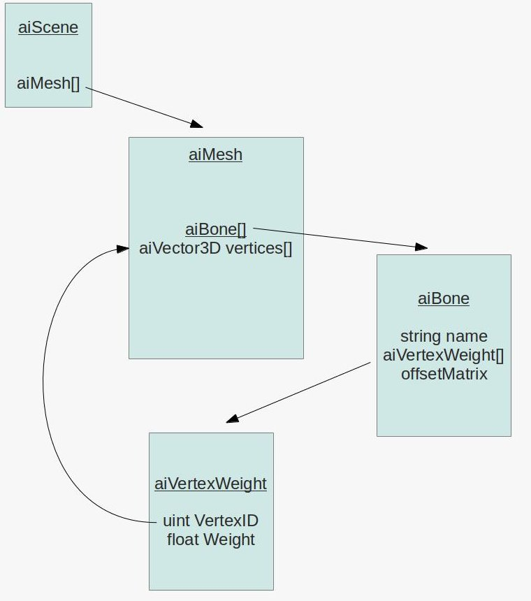
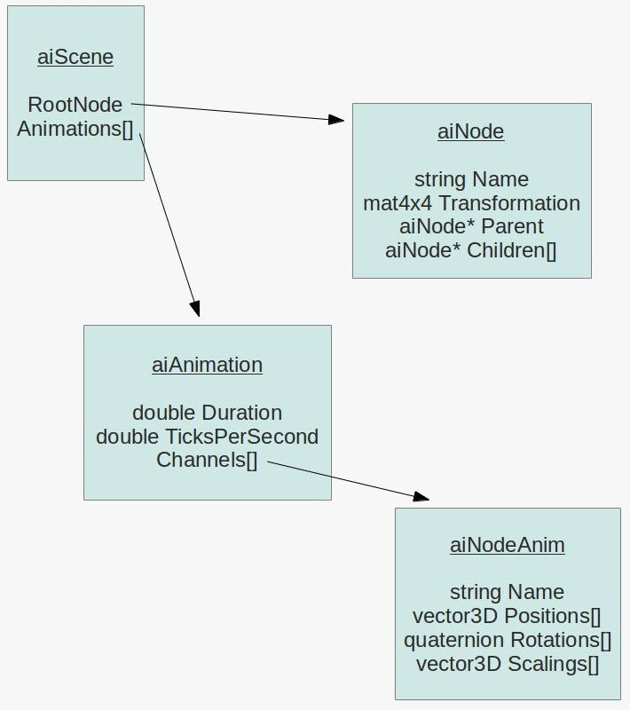

Background
Finally, it is here. The tutorial that millions of my readers (I may be exaggerating here, but definitely a few ;-) ) have been asking for. Skeletal animation, also known as Skinning, using the Assimp library.
Skeletal animation is actually a two part process. The first one is executed by the artist and the second by you, the programmer (or rather, the engine that you wrote). The first part takes place inside the modeling software and is called Rigging. What happens here is that the artist defines a skeleton of bones underneath the mesh. The mesh represents the skin of the object (be it a human, monster or whatever) and the bones are used to move the mesh in a way that would mimic actual movement in the real world. This is done by assigning each vertex to one or more bones. When a vertex is assigned to a bone a weight is defined that determines the amount of influence that bone has on the vertex when it moves. The common practice is to make the sum of all weights 1 (per vertex). For example, if a vertex is located exactly between two bones we would probably want to assign each bone a weight of 0.5 because we expect the bones to be equal in their influence on the vertex. However, if a vertex is entirely within the influence of a single bone then the weight would be 1 (which means that bone autonomously controls the movement of the vertex).
Here's an example of a bone structure created in blender:
What we see above is actually an important part of the animation. The artist riggs together the bone structure and defines a set of key frames for each animation type ("walk", "run", "die", etc). The key frames contain the transformations of all bones in critical points along the animation path. The graphics engine interpolates between the transformations of the keyframes and creates a smooth motion between them.
The bone structure used for skeletal animation is often heirarchical. This means that the bones have a child/parent relationships so a tree of bones is created. Every bone has one parent except for the root bone. In the case of the human body, for example, you may assign the back bone as the root with child bones such as arms and legs and finger bones on the next level done. When a parent bone moves it also moves all of its children, but when a child bone moves it does not move it parent (our fingers can move without moving the hand, but when the hand moves it moves all of its fingers). From a practical point of view this means that when we process the transformations of a bone we need to combine it with the transformations of all the parent bones that lead from it to the root.
We are not going to discuss rigging any further. It is a complex subject and outside the domain of graphics programmers. Modeling software has advanced tools to help the artist do this job and you need to be a good artist to create a good looking mesh and skeleton. Let's see what the graphics engine needs to do in order to make skeletal animation.
The first stage is to augument the vertex buffer with per vertex bone information. There are several options available but what we are going to do is pretty straightforward. For each vertex we are going to add an array of slots where each slot contains a bone ID and a weight. To make our life simpler we will use an array with four slots which means no vertex can be influenced by more than four bones. If you are going to load models with more bones you will need to adjust the array size but for the Doom 3 model that is part of this tutorial demo four bones are enough. So our new vertex structure is going to look like this:
The bone IDs are indices into an array of bone transformations. These tranformations will be applied on the position and normal before the WVP matrix (i.e. they transform the vertex from a "bone space" into local space). The weight will be used to combine the transformations of several bones into a single transformation and in any case the total weight must be exactly 1 (responsibility of the modeling software). Usually, we would interpolate between animation key frames and update the array of bone transformations in every frame.
The way the array of bone transformations is created is usually the tricky part. The transformations are set in a heirarchical structure (i.e. tree) and a common practice is to have a scaling vector, a rotation quaternion and a translation vector in every node in the tree. In fact, each node contains an array of these items. Every entry in the array must have a time stamp. The case where the application time will exactly match one of the time stamps is probably rare so our code must be able to interpolate the scaling/rotation/translation to get the correct transformation for the point in time of the application. We do the same process for each node from the current bone to the root and multiply this chain of transformations together to get the final result. We do that for each bone and then update the shader.
Everything that we talked about so far has been pretty generic. But this is a tutorial about skeletal animation with Assimp, so we need to dive into that library again and see how to do skinning with it. The good thing about Assimp is that it supports loading bone information from several formats. The bad thing is that you still need to do quite a bit of work on the data structures that it creates to generate the bone transformations that you need for the shaders.
Let's start at the bone information at the vertex level. Here's the relevant pieces in Assimp data structures:
As you probably recall from the tutorial on Assimp, everything is contained in the aiScene class (an object of which we get when we import the mesh file). The aiScene contains an array of aiMesh objects. An aiMesh is a part of the model and contains stuff at the vertex level such as position, normal, texture coordinates, etc. Now we see that aiMesh also contains an array of aiBone objects. Unsuprisingly, an aiBone represents one bone in the skeleton of the mesh. Each bone has a name by which it can be found in the bone hierarchy (see below), an array of vertex weights and a 4x4 offset matrix. The reason why we need this matrix is because the vertices are stored in the usual local space. This means that even without skeletal animation support our existing code base can load the model and render it correctly. But the bone transformations in the hierarchy work in a bone space (and every bone has its own space which is why we need to multiply the transformations together). So the job of the offset matrix it to move the vertex position from the local space of the mesh into the bone space of that particular bone.
The vertex weight array is where things start to become interesting. Each entry in this array contains an index into the array of vertices in the aiMesh (remember that the vertex is spread across several arrays with the same length) and a weight. The sum of all vertex weights must be 1 but to find them you need to walk through all the bones and accumulate the weights into a kind of list for each particular vertex.
After we build the bone information at the vertex level we need to process the bone transformation hierarchy and generate the final transformations that we will load into the shader. The following picture displays the relevant data structures:
Again, we start at the aiScene. The aiScene object contains a pointer to an object of the aiNode class which is the root of the a node hierarchy (in other words - a tree). Each node in the tree has a pointer back to its parent and an array of pointers to its children. This allows us to conveniently traverse the tree back and forth. In addition, the node carries a transformation matrix that transforms from the node space into the space of its parent. Finally, the node may or may not have a name. If a node represents a bone in the hierarchy then the node name must match the bone name. But sometimes nodes have no name (which means there is not corresponding bone) and their job is simply to help the modeller decompose the model and place some intermediate transformation along the way.
The last piece of the puzzle is the aiAnimation array which is also stored in the aiScene object. A single aiAnimation object represents a sequence of animation frames such as "walk", "run", "shoot", etc. By interpolating between the frames we get the desired visual effect which matches the name of the animation. An animation has a duration in ticks and the number of ticks per second (e.g 100 ticks and 25 ticks per second represent a 4 second animation) which help us time the progression so that the animation will look the same on every hardware. In addition, the animation has an array of aiNodeAnim objects called channels. Each channel is actually the bone with all its transformations. The channel contains a name which must match one of the nodes in the hierarchy and three transformation arrays.
In order to calculate the final bone transformation in a particular point in time we need to find the two entries in each of these three arrays that matches the time and interpolate between them. Then we need to combine the transformations into a single matrix. Having done that we need to find the corresponding node in the hierarchy and travel to its parent. Then we need the corresponding channel for the parent and do the same interpolation process. We multiply the two transformations together and continue until we reach the root of the hierarchy.
Source walkthru
(mesh.cpp:75)
bool Mesh::LoadMesh(const string& Filename)
{
// Release the previously loaded mesh (if it exists)
Clear();
// Create the VAO
glGenVertexArrays(1, &m_VAO);
glBindVertexArray(m_VAO);
// Create the buffers for the vertices attributes
glGenBuffers(ARRAY_SIZE_IN_ELEMENTS(m_Buffers), m_Buffers);
bool Ret = false;
m_pScene = m_Importer.ReadFile(Filename.c_str(), aiProcess_Triangulate | aiProcess_GenSmoothNormals |
aiProcess_FlipUVs);
if (m_pScene) {
m_GlobalInverseTransform = m_pScene->mRootNode->mTransformation;
m_GlobalInverseTransform = m_GlobalInverseTransform.Inverse();
Ret = InitFromScene(m_pScene, Filename);
}
else {
printf("Error parsing '%s': '%s'\n", Filename.c_str(), m_Importer.GetErrorString());
}
// Make sure the VAO is not changed from the outside
glBindVertexArray(0);
return Ret;
}
Here's the updated entry point to the Mesh class with changes marked in bold face. There are a couple of changes that we need to note. One is that the importer and aiScene object are now class members rather then stack variables. The reason is that during runtime we are going to go back to the aiScene object again and again and for that we need to extend the scope of both the importer and the scene. In a real game you may want to copy the stuff that you need and store it at a more optimized format but for educational purposes this is enough.
The second change is that the transformation matrix of the root of the hierarchy is extracted, inversed and stored. We are going to use that further down the road. Note that the matrix inverse code has been copied from the Assimp library into our Matrix4f class.
(mesh.h:69)
struct VertexBoneData
{
uint IDs[NUM_BONES_PER_VERTEX];
float Weights[NUM_BONES_PER_VERTEX];
}
(mesh.cpp:107)
bool Mesh::InitFromScene(const aiScene* pScene, const string& Filename)
{
...
vector<VertexBoneData> Bones;
...
Bones.resize(NumVertices);
...
glBindBuffer(GL_ARRAY_BUFFER, m_Buffers[BONE_VB]);
glBufferData(GL_ARRAY_BUFFER, sizeof(Bones[0]) * Bones.size(), &Bones[0], GL_STATIC_DRAW);
glEnableVertexAttribArray(BONE_ID_LOCATION);
glVertexAttribIPointer(BONE_ID_LOCATION, 4, GL_INT, sizeof(VertexBoneData), (const GLvoid*)0);
glEnableVertexAttribArray(BONE_WEIGHT_LOCATION);
glVertexAttribPointer(BONE_WEIGHT_LOCATION, 4, GL_FLOAT, GL_FALSE, sizeof(VertexBoneData), (const GLvoid*)16);
...
}
The structure above contains everything we need at the vertex level. By default, we have enough storage for four bones (ID and weight per bone). VertexBoneData was structured like that to make it simple to pass it on to the shader. We already got position, texture coordinates and normal bound at locations 0, 1 and 2, respectively. Therefore, we configure our VAO to bind the bone IDs at location 3 and the weights at location 4. It is very important to note that we use glVertexAttribIPointer rather than glVertexAttribPointer to bind the IDs. The reason is that the IDs are integer and not floating point. Pay attention to this or you will get corrupted data in the shader.
(mesh.cpp:213)
void Mesh::LoadBones(uint MeshIndex, const aiMesh* pMesh, vector& Bones)
{
for (uint i = 0 ; i < pMesh->mNumBones ; i++) {
uint BoneIndex = 0;
string BoneName(pMesh->mBones[i]->mName.data);
if (m_BoneMapping.find(BoneName) == m_BoneMapping.end()) {
BoneIndex = m_NumBones;
m_NumBones++;
BoneInfo bi;
m_BoneInfo.push_back(bi);
}
else {
BoneIndex = m_BoneMapping[BoneName];
}
m_BoneMapping[BoneName] = BoneIndex;
m_BoneInfo[BoneIndex].BoneOffset = pMesh->mBones[i]->mOffsetMatrix;
for (uint j = 0 ; j < pMesh->mBones[i]->mNumWeights ; j++) {
uint VertexID = m_Entries[MeshIndex].BaseVertex + pMesh->mBones[i]->mWeights[j].mVertexId;
float Weight = pMesh->mBones[i]->mWeights[j].mWeight;
Bones[VertexID].AddBoneData(BoneIndex, Weight);
}
}
}
The function above loads the vertex bone information for a single aiMesh object. It is called from Mesh::InitMesh(). In addition to populating the VertexBoneData structure this function also updates a map between bone names and bone IDs (a running index managed by this function) and stores the offset matrix in a vector based on the bone ID. Note how the vertex ID is calculated. Since vertex IDs are relevant to a single mesh and we store all meshes in a single vector we add the base vertex ID of the current aiMesh to vertex ID from the mWeights array to get the absolute vertex ID.
(mesh.cpp:29)
void Mesh::VertexBoneData::AddBoneData(uint BoneID, float Weight)
{
for (uint i = 0 ; i < ARRAY_SIZE_IN_ELEMENTS(IDs) ; i++) {
if (Weights[i] == 0.0) {
IDs[i] = BoneID;
Weights[i] = Weight;
return;
}
}
// should never get here - more bones than we have space for
assert(0);
}
This utility function finds a free slot in the VertexBoneData structure and places the bone ID and weight in it. Some vertices will be influenced by less than four bones but since the weight of a non existing bone remains zero (see the constructor of VertexBoneData) it means that we can use the same weight calculation for any number of bones.
(mesh.cpp:473)
Matrix4f Mesh::BoneTransform(float TimeInSeconds, vector<Matrix4f>& Transforms)
{
Matrix4f Identity;
Identity.InitIdentity();
float TicksPerSecond = m_pScene->mAnimations[0]->mTicksPerSecond != 0 ?
m_pScene->mAnimations[0]->mTicksPerSecond : 25.0f;
float TimeInTicks = TimeInSeconds * TicksPerSecond;
float AnimationTime = fmod(TimeInTicks, m_pScene->mAnimations[0]->mDuration);
ReadNodeHierarchy(AnimationTime, m_pScene->mRootNode, Identity);
Transforms.resize(m_NumBones);
for (uint i = 0 ; i < m_NumBones ; i++) {
Transforms[i] = m_BoneInfo[i].FinalTransformation;
}
}
Loading of the bone information at the vertex level that we saw earlier is done only once when the mesh is loading during startup. Now we come to the second part which is calculating the bone transformations that go into the shader every frame. The function above is the entry point to this activity. The caller reports the current time in seconds (which can be a fraction) and provides a vector of matrices which we must update. We find the relative time inside the animation cycle and process the node hierarchy. The result is an array of transformations which is returned to the caller.
(mesh.cpp:428)
void Mesh::ReadNodeHierarchy(float AnimationTime, const aiNode* pNode, const Matrix4f& ParentTransform)
{
string NodeName(pNode->mName.data);
const aiAnimation* pAnimation = m_pScene->mAnimations[0];
Matrix4f NodeTransformation(pNode->mTransformation);
const aiNodeAnim* pNodeAnim = FindNodeAnim(pAnimation, NodeName);
if (pNodeAnim) {
// Interpolate scaling and generate scaling transformation matrix
aiVector3D Scaling;
CalcInterpolatedScaling(Scaling, AnimationTime, pNodeAnim);
Matrix4f ScalingM;
ScalingM.InitScaleTransform(Scaling.x, Scaling.y, Scaling.z);
// Interpolate rotation and generate rotation transformation matrix
aiQuaternion RotationQ;
CalcInterpolatedRotation(RotationQ, AnimationTime, pNodeAnim);
Matrix4f RotationM = Matrix4f(RotationQ.GetMatrix());
// Interpolate translation and generate translation transformation matrix
aiVector3D Translation;
CalcInterpolatedPosition(Translation, AnimationTime, pNodeAnim);
Matrix4f TranslationM;
TranslationM.InitTranslationTransform(Translation.x, Translation.y, Translation.z);
// Combine the above transformations
NodeTransformation = TranslationM * RotationM * ScalingM;
}
Matrix4f GlobalTransformation = ParentTransform * NodeTransformation;
if (m_BoneMapping.find(NodeName) != m_BoneMapping.end()) {
uint BoneIndex = m_BoneMapping[NodeName];
m_BoneInfo[BoneIndex].FinalTransformation = m_GlobalInverseTransform * GlobalTransformation *
m_BoneInfo[BoneIndex].BoneOffset;
}
for (uint i = 0 ; i < pNode->mNumChildren ; i++) {
ReadNodeHierarchy(AnimationTime, pNode->mChildren[i], GlobalTransformation);
}
}
This function traverses the node tree and generates the final transformation for each node/bone according to the specified animation time. It is limited in the sense that it assumes that the mesh has only a single animation sequence. If you want to support multiple animations you will need to tell it the animation name and search for it in the m_pScene->mAnimations[] array. The code above is good enough for the demo mesh that we use.
The node transformation is initialized from the mTransformation member in the node. If the node does not correspond to a bone then that is its final transformation. If it does we overwrite it with a matrix that we generate. This is done as follows: first we search for the node name in the channel array of the animation. Then we interpolate the scaling vector, rotation quaternion and translation vector based on the animation time. We combine them into a single matrix and multiply with the matrix we got as a parameter (named GlobablTransformation). This function is recursive and is called for the root node with the GlobalTransformation param being the identity matrix. Each node recursively calls this function for all of its children and passes its own transformation as GlobalTransformation. Since we start at the top and work our way down, we get the combined transformation chain at every node.
The m_BoneMapping array maps a node name to the index that we generate and we use that index to as an entry into the m_BoneInfo array where the final transformations are stored. The final transformation is calculated as follows: we start with the node offset matrix which brings the vertices from their local space position into their node space. We then multiple with the combined transformations of all of the nodes parents plus the specific transformation that we calculated for the node according to the animation time.
Note that we use Assimp code here to handle the math stuff. I saw no point in duplicating it into our own code base so I simply used Assimp.
(mesh.cpp:387)
void Mesh::CalcInterpolatedRotation(aiQuaternion& Out, float AnimationTime, const aiNodeAnim* pNodeAnim)
{
// we need at least two values to interpolate...
if (pNodeAnim->mNumRotationKeys == 1) {
Out = pNodeAnim->mRotationKeys[0].mValue;
return;
}
uint RotationIndex = FindRotation(AnimationTime, pNodeAnim);
uint NextRotationIndex = (RotationIndex + 1);
assert(NextRotationIndex < pNodeAnim->mNumRotationKeys);
float DeltaTime = pNodeAnim->mRotationKeys[NextRotationIndex].mTime - pNodeAnim->mRotationKeys[RotationIndex].mTime;
float Factor = (AnimationTime - (float)pNodeAnim->mRotationKeys[RotationIndex].mTime) / DeltaTime;
assert(Factor >= 0.0f && Factor <= 1.0f);
const aiQuaternion& StartRotationQ = pNodeAnim->mRotationKeys[RotationIndex].mValue;
const aiQuaternion& EndRotationQ = pNodeAnim->mRotationKeys[NextRotationIndex].mValue;
aiQuaternion::Interpolate(Out, StartRotationQ, EndRotationQ, Factor);
Out = Out.Normalize();
}
This method interpolates the rotation quaternion of the specified channel based on the animation time (remember that the channel contains an array of key quaternions). First we find the index of the key quaternion which is just before the required animation time. We calculate the ratio between the distance from the animation time to the key before it and the distance between that key and the next. We need to interpolate between these two keys using that factor. We use an Assimp code to do the interpolation and normalize the result. The corresponding methods for position and scaling are very similar so they are not quoted here.
(mesh.cpp:335)
uint Mesh::FindRotation(float AnimationTime, const aiNodeAnim* pNodeAnim)
{
assert(pNodeAnim->mNumRotationKeys > 0);
for (uint i = 0 ; i < pNodeAnim->mNumRotationKeys - 1 ; i++) {
if (AnimationTime < (float)pNodeAnim->mRotationKeys[i + 1].mTime) {
return i;
}
}
assert(0);
}
This utility method finds the key rotation which is immediately before the animation time. If we have N key rotations the result can be 0 to N-2. The animation time is always contained inside the duration of the channel so the last key (N-1) can never be a valid result.
(skinning.vs)
#version 330
layout (location = 0) in vec3 Position;
layout (location = 1) in vec2 TexCoord;
layout (location = 2) in vec3 Normal;
layout (location = 3) in ivec4 BoneIDs;
layout (location = 4) in vec4 Weights;
out vec2 TexCoord0;
out vec3 Normal0;
out vec3 WorldPos0;
const int MAX_BONES = 100;
uniform mat4 gWVP;
uniform mat4 gWorld;
uniform mat4 gBones[MAX_BONES];
void main()
{
mat4 BoneTransform = gBones[BoneIDs[0]] * Weights[0];
BoneTransform += gBones[BoneIDs[1]] * Weights[1];
BoneTransform += gBones[BoneIDs[2]] * Weights[2];
BoneTransform += gBones[BoneIDs[3]] * Weights[3];
vec4 PosL = BoneTransform * vec4(Position, 1.0);
gl_Position = gWVP * PosL;
TexCoord0 = TexCoord;
vec4 NormalL = BoneTransform * vec4(Normal, 0.0);
Normal0 = (gWorld * NormalL).xyz;
WorldPos0 = (gWorld * PosL).xyz;
}
Now that we have finished with the changes in the mesh class let's see what we need to do at the shader level. First, we've added the bone IDs and weights array to the VSInput structure. Next, there is a new uniform array that contains the bone transformations. In the shader itself we calculate the final bone transformation as a combination of the bone transformation matrices of the vertex and their weights. This final matrix is used to transform the position and normal from their bone space into the local space. From here on everything is the same.
(tutorial38.cpp:140)
float RunningTime = (float)((double)GetCurrentTimeMillis() - (double)m_startTime) / 1000.0f;
m_mesh.BoneTransform(RunningTime, Transforms);
for (uint i = 0 ; i < Transforms.size() ; i++) {
m_pEffect->SetBoneTransform(i, Transforms[i]);
}
The last thing we need to do is to integrate all this stuff into the application code. This is done in the above simple code. The function GetCurrentTimeMillis() returns the time in milliseconds since the application startup (note the floating point to accomodate fractions).
If you've done everything correctly then the final result should look similar to this.